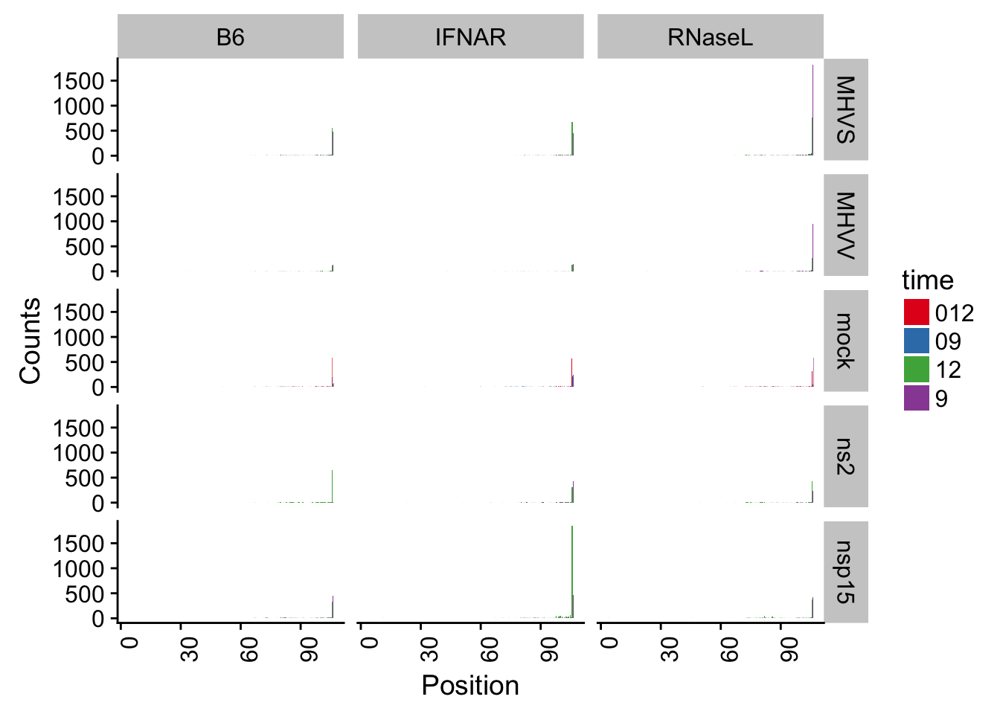

This analysis was performed to assess capture of 2´,3´-cyclic phosphate capture of U6 RNA, which has a cyclic phosphate at its 3´-end produced during RNA processing. All samples should have capture of 2,´3´-cyclic phosphates at the very 3´-end of the RNA.
#Load Libraries
library(tidyverse)
library(readr)
library(dplyr)
library(ggplot2)
library(valr)
library(Sushi)
library(stringr)
library(cowplot)
library(RColorBrewer)
library(purrr)
Generating U6 coverage graphs for all cell types by viral infection status
#Read in bedgraph files
data_dir = "~/Dropbox (Hesselberth Lab)/Rachel_data/EndoU_project/U6_bg/"
data_files = list.files(data_dir, full.names = T)
read_file <- function(x) {
df <- readr::read_tsv(x, col_names = c("chrom", "start", "end", "count"))
df$name <- basename(x)
df
}
#Generate data table and make graphs
U6_table <- purrr::map_df(data_files, read_file) %>%
dplyr::mutate(name = str_replace(name, ".umi.U6.bg", "")) %>%
separate(name, into = c('cell', 'virus', 'time'), sep = '_')
plot_U6 <- ggplot(U6_table, aes(x = start, y = count)) +
geom_bar(aes(fill = time), stat = "identity", position = 'dodge') +
scale_fill_brewer(palette="Set1") +
theme_cowplot()
plot_U6_final <- plot_U6 +
facet_grid(virus ~ cell) +
theme(axis.text.x = element_text(angle = 90, hjust = 1)) +
labs(x="Position", y="Counts")
plot_U6_final

Overall, we see specific capture of U6, cyclic phosphate in all the samples. Although, there were disparities among the relatives amounts of cyclic phosphate captured between library samples.